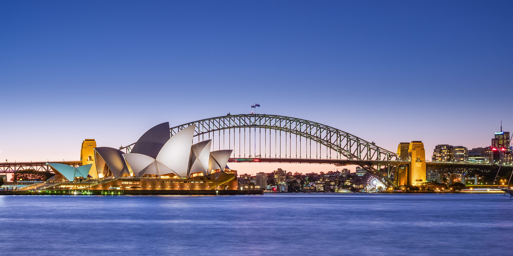

A city of iconic attractions and brilliant beaches, Sydney is a destination you'll never forget. Sydney is home to must-visit icons like the Sydney Harbour Bridge and Opera House, but this Harbour City is constantly evolving. New rooftop bars, theatre shows and designer shops pop up at every turn, and the urban excitement is perfectly balanced by afternoons spent lying on the sand. Plus, with diverse destinations at its doorstep, Sydney is the perfect base for day trips and weekends away.